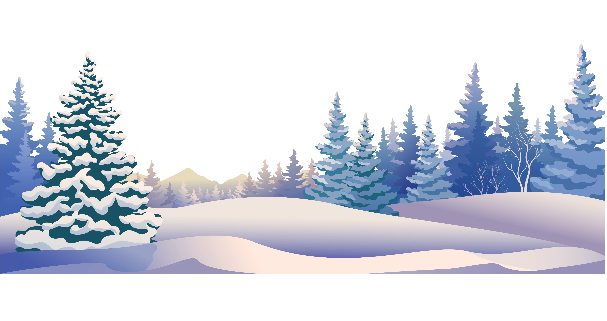
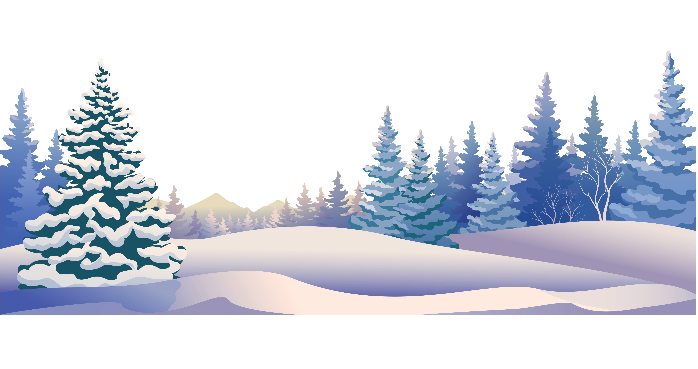
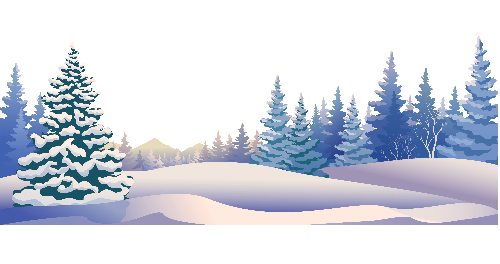
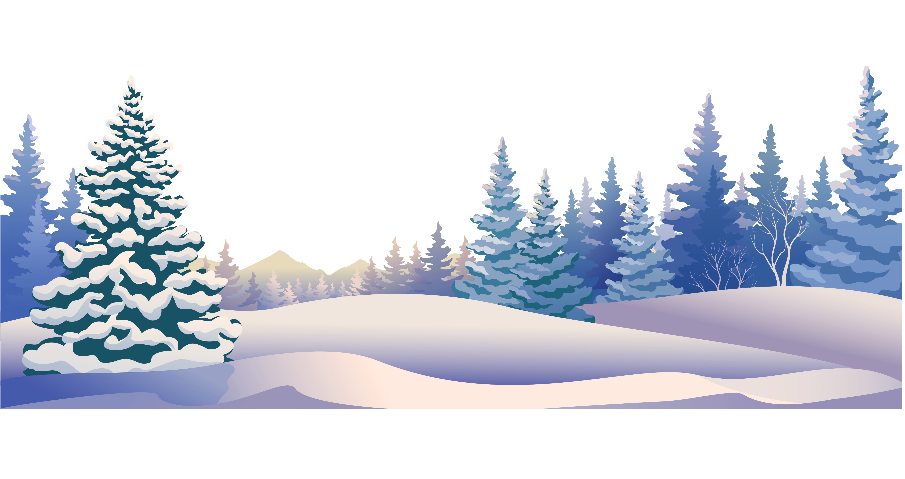

Hello Winter!


 


 

Карпати – унікальний регіон з особливим повітрям, що має цілющий вплив на фізичне та ментальне здоров’я. Дихається тут, у всіх сенсах, легше: легені заповнює чисте повітря, а голову – чисті думки. Саме тому Карпати століттями є місцем відновлення не для одного покоління українців.
Дослідники Harvard T.H. Chan School of Public Health зазначають, що перебування на природі, зокрема в горах, знижує ризики хронічних захворювань, зменшує артеріальний тиск і покращує якість сну. Наші Карпати кивають дослідникам зі згодою – усе так. Чисте гірське повітря стимулює роботу легенів і серцево-судинної системи, сприяє покращенню імунітету та полегшує симптоми алергій.
Крім того, дослідження Університету Чунцина "Explore the Benefits of Natural Air: New Insights from Field and Chamber Tests on Cognitive Performance" доводить, що гірське повітря сприяє покращенню когнітивних функцій людини. Воно підвищує рівень серотоніну – нейромедіатора, який регулює настрій. Високогірне середовище також зменшує рівень кортизолу, гормону стресу, завдяки розслаблювальним ефектам природи та збільшенню кисневого обміну в організмі. Гірські прогулянки допомагають знижувати рівень тривожності та поліпшувати загальне самопочуття.
Аби традиція відновлення в горах і надалі крокувала нашим побутом та культурою, курорт Bukovel активно стежить за чистотою повітря. Регулярний моніторинг за допомогою сучасного обладнання в серці Карпат дає змогу гарантувати гостям найкращі умови для оздоровлення. Саме такий підхід робить відпочинок не лише приємним, але й ефективним для відновлення сил та здоров’я. Перебування в Карпатах – це приємно та корисно.